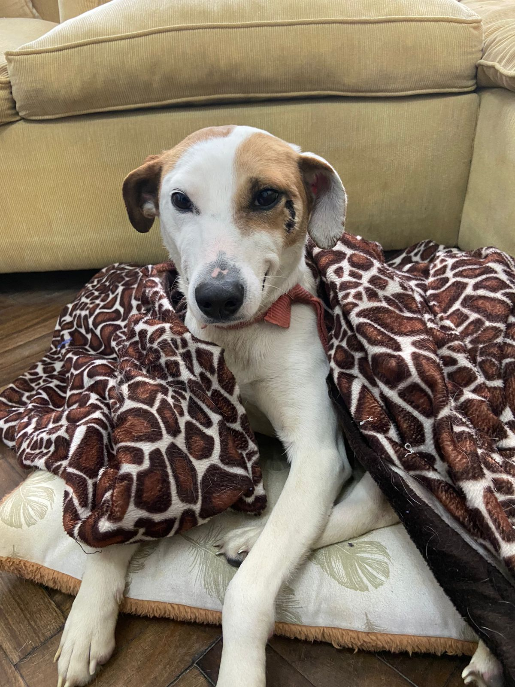

Explain a situation where you have made an ethical decision. Discuss how you weighed up the values involved in that decision, the decision you made, and how you reflect on the decision now.
Last year during my holiday in Buenos Aires, I was taking a Sunday walk when a scared and dirty dog approached me. Her collar was broken, and she seemed lost. My partner and I decided to follow her and catch her as we were close to a busy avenue with lots of traffic. After catching her, we discovered that the dog belonged to a homeless person. We then embarked on a mission to find her owner, asking around and walking for four hours until we finally found him. However, he seemed disinterested in the dog, and since she was on heat, we decided to take her with us to prevent any further harm. She followed us for an hour to our apartment where we gave her a bath, took her to the vet, and gave her a new collar. Although we faced negative comments for taking her away from her "owner," we knew it was the right thing to do to ensure her safety. We eventually found her a new home by posting on social media. Looking back, I still ponder whether the homeless person was her true owner, but I am happy that I took action and made the best decision possible with the information available to me at that time.

Describe how your culture and the people around you have influenced your values and identity.
As an Argentinean, I place a high value on friendships and have been fortunate to develop strong relationships throughout my life. My close friends provide support, encouragement, and celebrate my achievements. In addition, I am proud of the Argentinean culture's positive attitude towards mental health. With the highest number of psychologists per capita in the world, seeking professional help is viewed positively in the country. Having a strong support system of close friends and mental health professionals can create a successful environment to pursue one's dreams.
Identify your strengths and how they will support you during your learning journey.
I am creative and enjoy exploring how things work, which allows me to approach problems from unique angles and find innovative solutions. I firmly believe in thinking outside the box to overcome challenges. Additionally, my sense of responsibility is one of my greatest strengths. I take my commitments seriously and ensure that I always deliver on my promises. I take pride in my work and never make excuses or leave tasks unfinished.
Evaluate your limitations in terms of your learning and career development. How might these affect your learning journey?
I often begin a task or project with great enthusiasm, but when things become more challenging, I may lose motivation and abandon the task. Therefore, I realize that relying solely on motivation to complete my work is not a sustainable approach for me. Regarding multitasking, I'm still unsure if it is an effective strategy for me. Although it's not recommended, there are times when switching to a different task can help alleviate the frustration of feeling stuck and then returning to the original task later.
Share an example of when you were trying to work productively with others, but there was resistance or tension. Discuss strategies you tried at the time, how effective they were, and your reflections on what other strategies you would try now and why.
During my time at a Media Agency, I worked on a project for a new client that required a lot of operational tasks and long hours. As a result, mistakes were made and tensions started to build within the team. To address these issues, we began to hold regular meetings to share updates and ideas for improving our processes. I also took on more responsibilities and implemented checkpoints to reduce errors. Looking back, I realize the importance of building strong relationships with my team members and seeking help from other teams and management to avoid burnout. In future situations, I would prioritize communication and collaboration in order to work more efficiently and effectively.